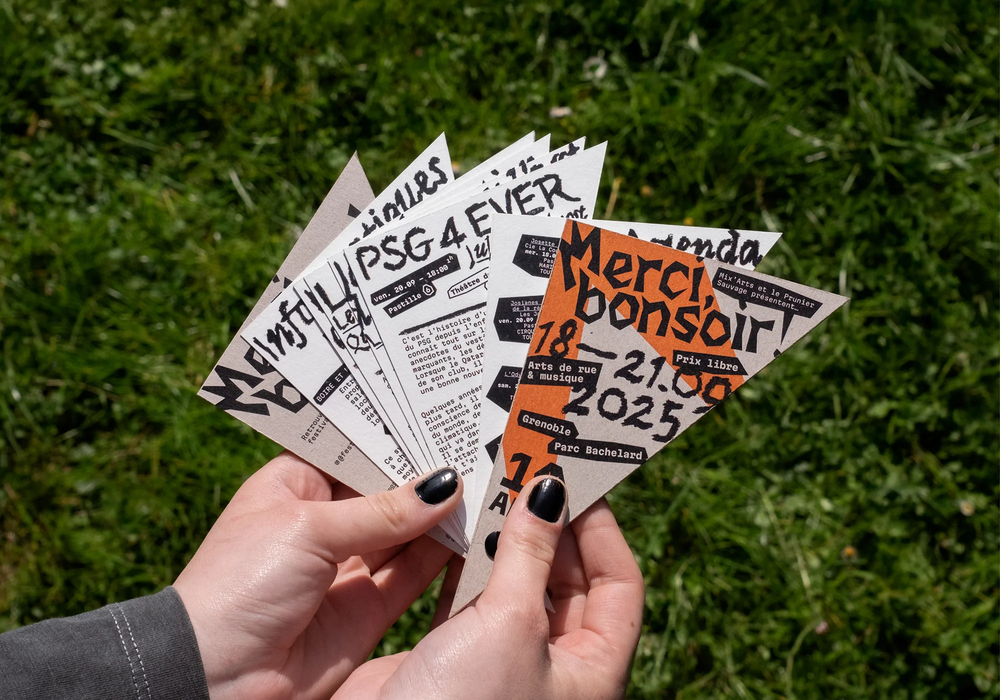
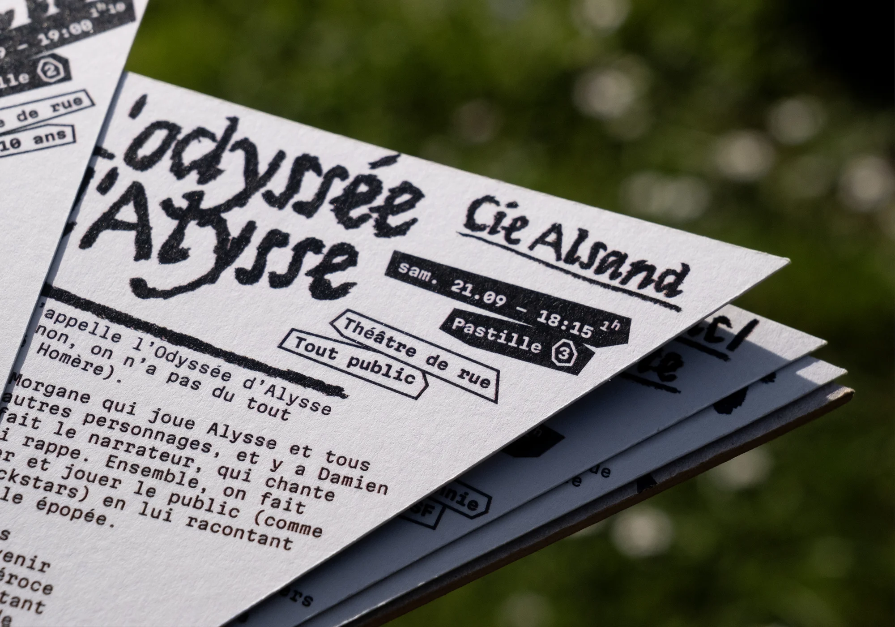
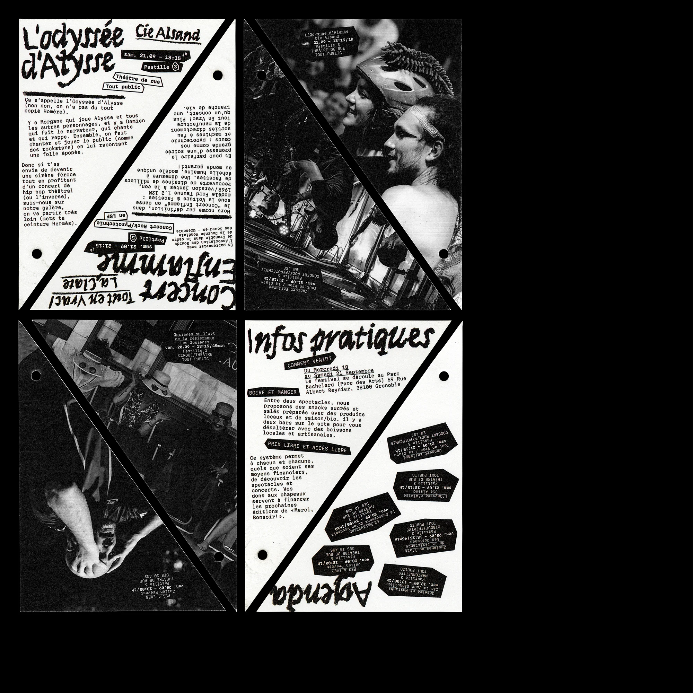
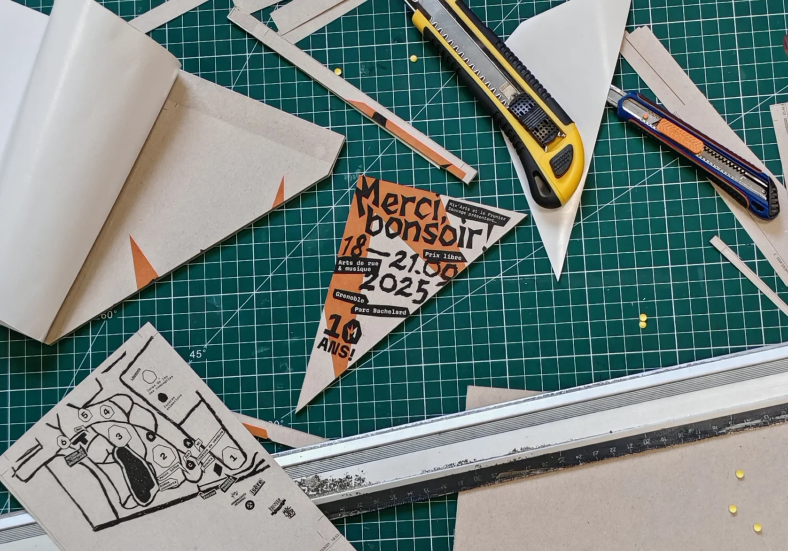

Merci, Bonsoir !
Édition, 2025
Projet d’école
Programme fictif réalisé pour le festival d’arts de rue et musique en plein air : Merci, Bonsoir !.
Ce choix de format peu commun (A6 coupé dans la diagonale) permet d’imprimer huit pages du programme sur un format A4. En plus de faire écho au registre de formes utilisé dans le logotype, on retrouve la crête de la mascotte du festival lorsqu’on le manipule !